Welcome to the Mipui Image Importer
This tool will allow you to create a new Mipui map from an image of a map. It will attempt to automatically infer the underlying grid, group cells by similary, and assign roles to each group. This process can be tweaked along the way.
This tool works best with clean, computer-produced maps, in which the grid is drawn. Hand-drawn maps, maps with no grid, and maps with a lot of small details and decorations will need more guidance along the way.
Examples of what this tool is designed to handle:
 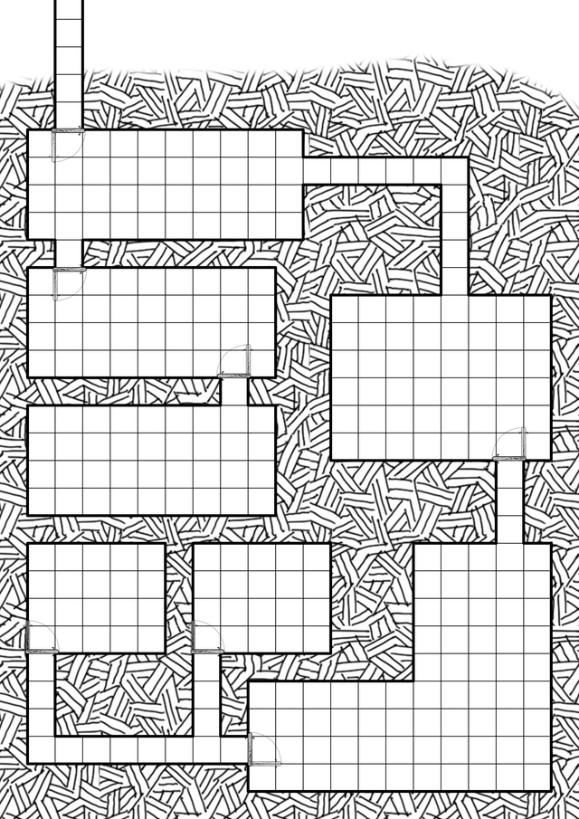
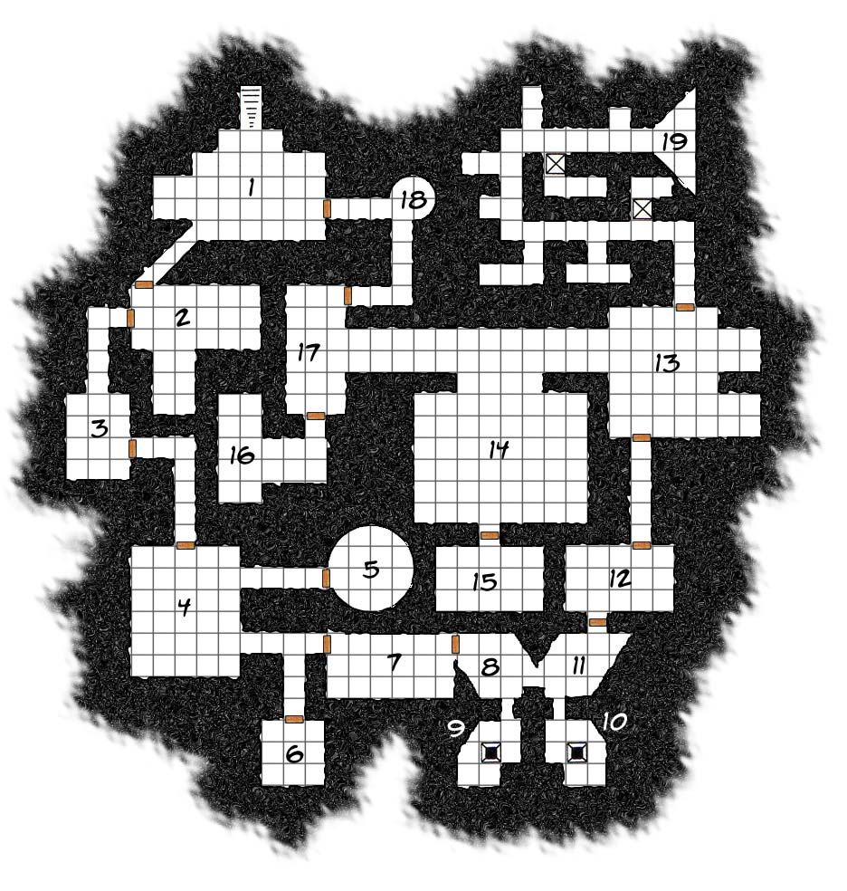
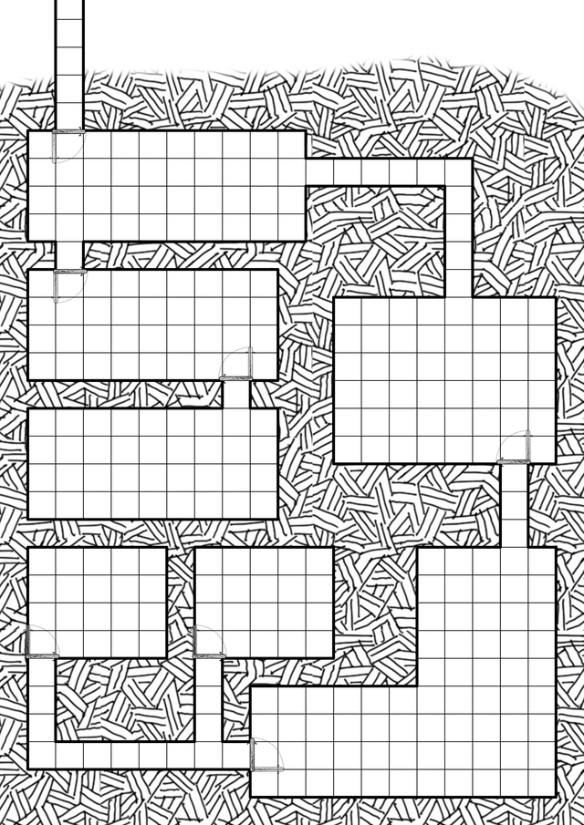
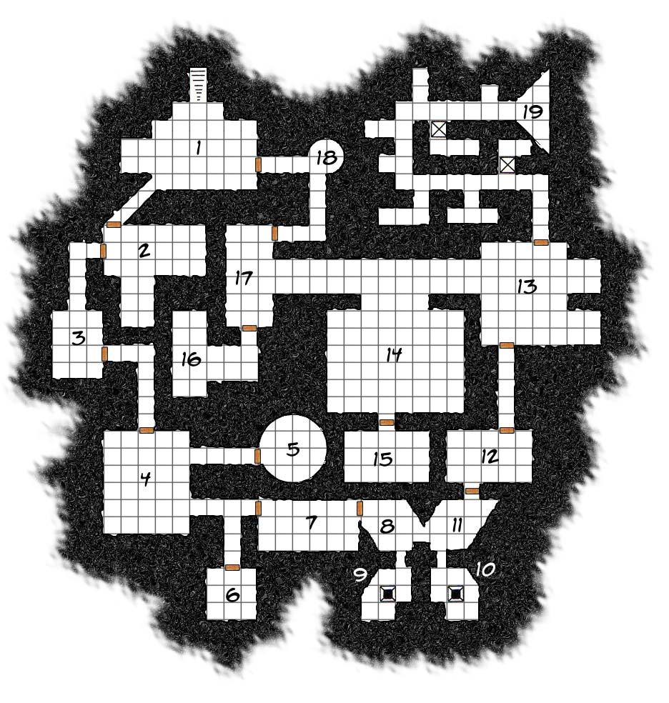
Examples of difficult maps that would require a lot of tweaking:
 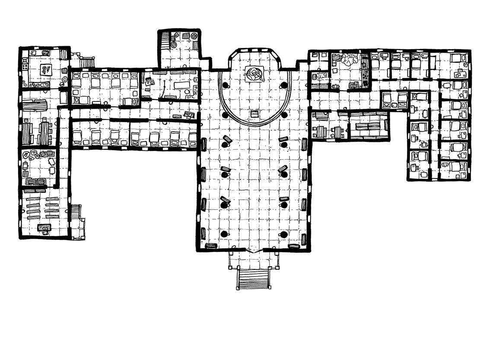
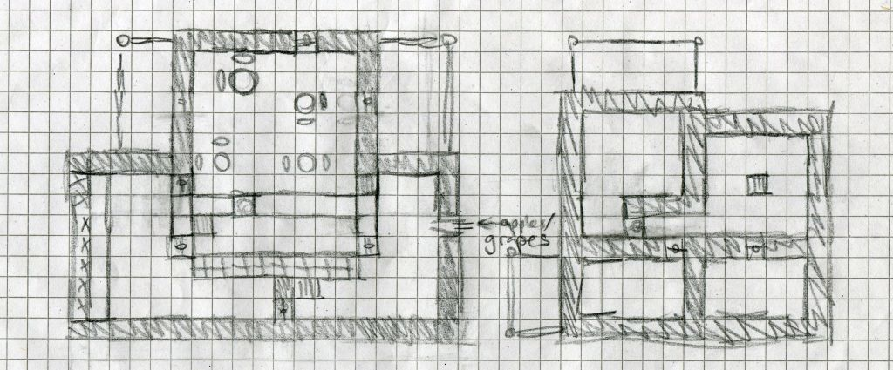
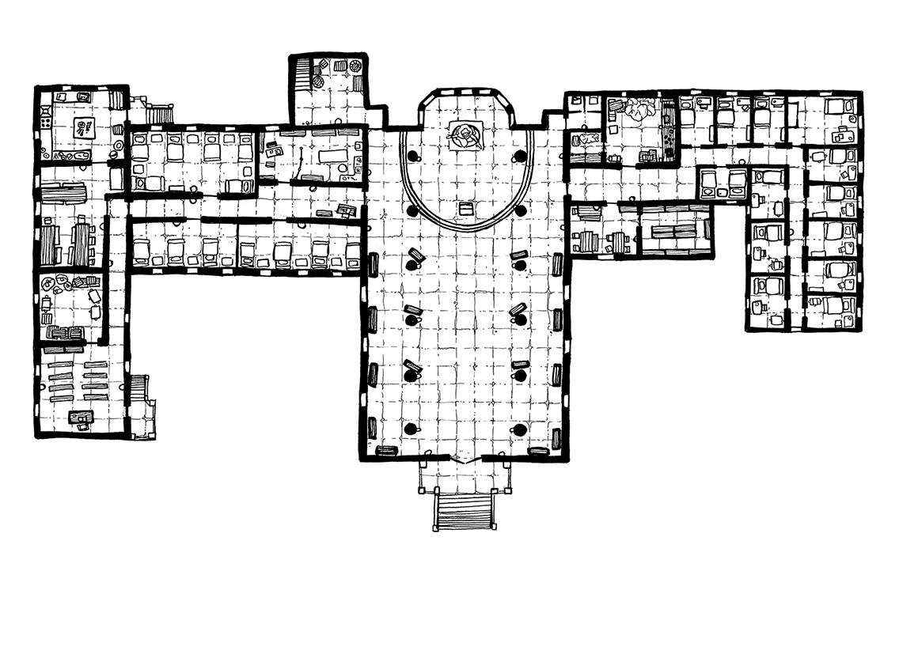
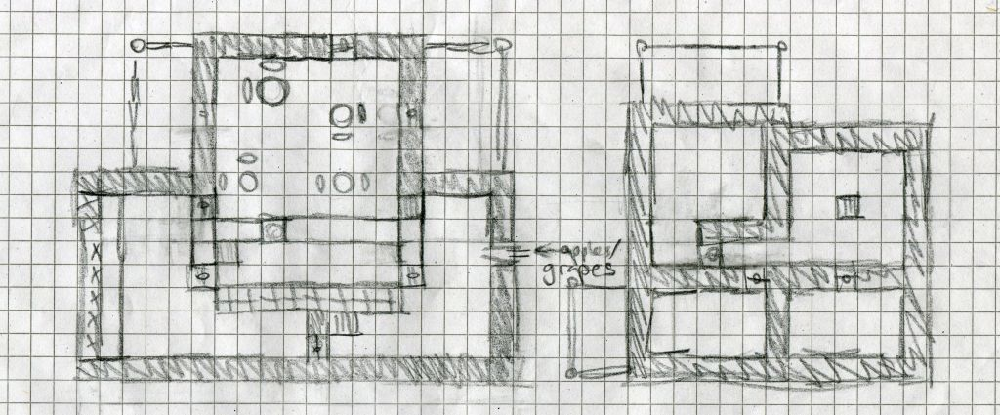
Examples of images this tool is totally unable to handle (and I'm not even sure what output you would expect):
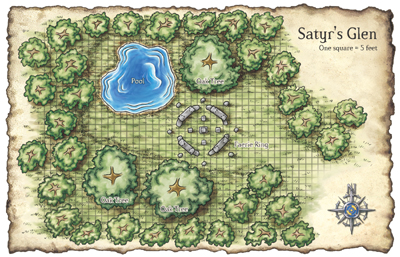
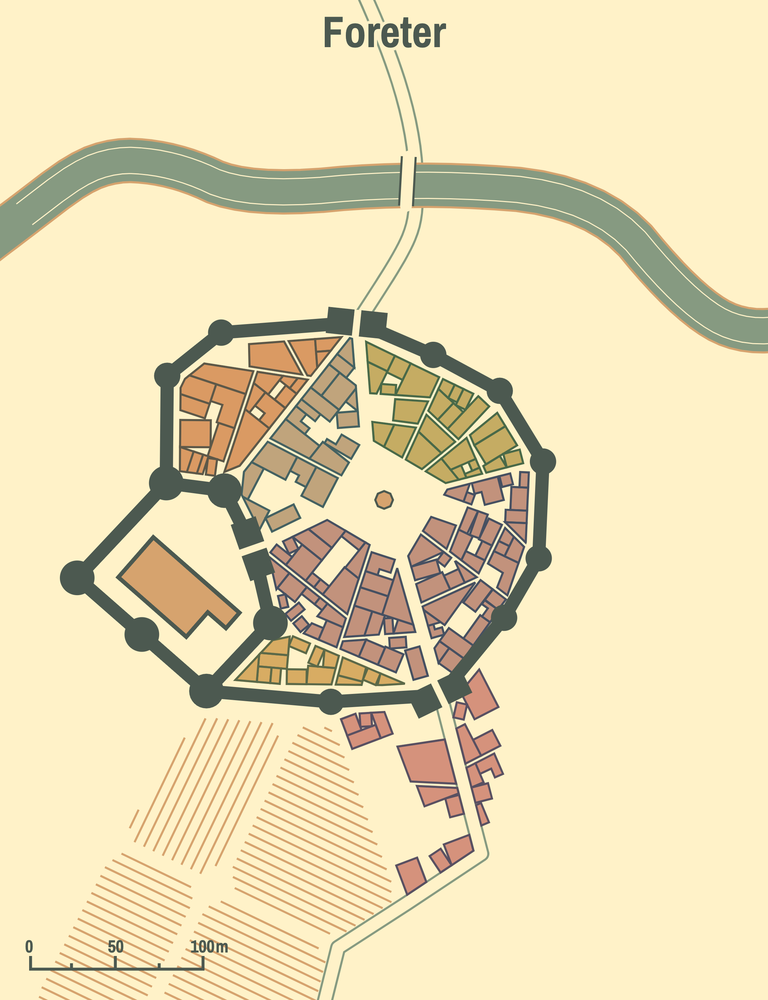
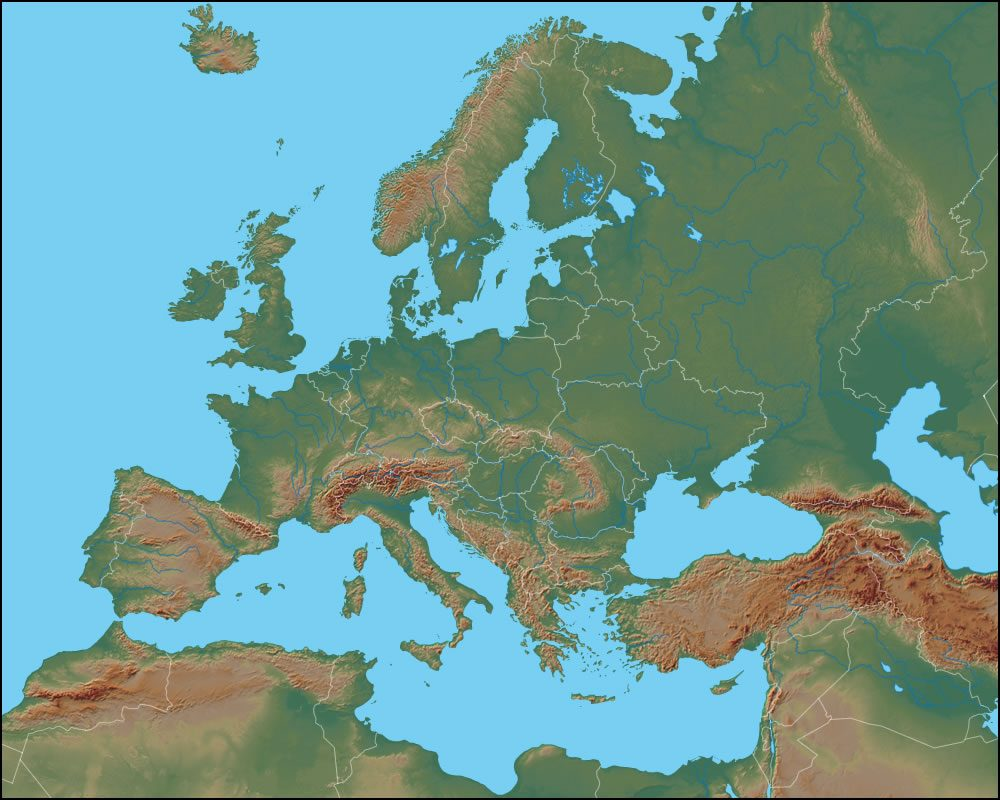
Hit "Next Step" to start the process!
Note: Images used by this tool may be stored on Mipui's servers and used for future improvements.
To tweak the grid, modify the numbers below or drag the grid to the right.
Primary cell size:
pixels
pixels
Divider cell size:
pixels
pixels
Primary cell left offset:
pixels
pixels
Primary cell top offset:
pixels
pixels
Choose a role for each cluster of cells. Choose "multiple assignments" if the cluster represents multiple different roles.